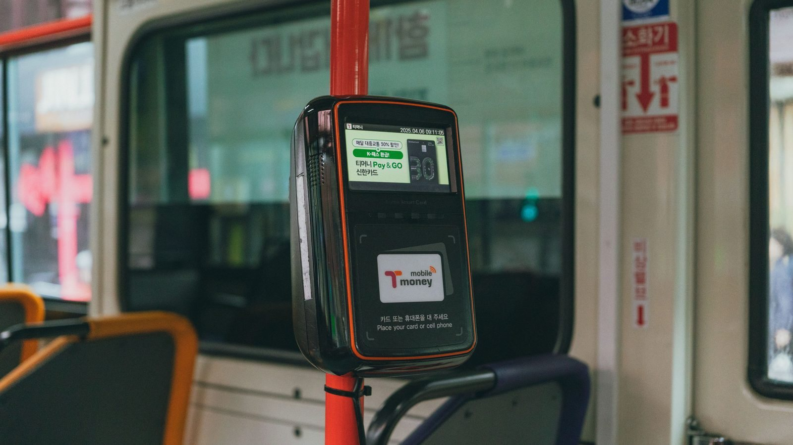

Itapema · Poder Público
Itapema · Poder PúblicoItapema aprova de novo R$ 906 mil para a empresa de ônibus, o mesmo valor de 2024, e a lei manda estudar tarifa zero
O outro repasse à mesma concessionária, oito dias antes.
A Prefeitura de Itapema publicou na sexta-feira, 18, a homologação de uma compra de R$ 29.998,80 em vale-transporte da Viação Praiana, a concessionária do ônibus urbano da cidade. É a segunda compra do tipo em 2026. Com a de fevereiro, de R$ 24.916,50, o ano soma R$ 54.915,30, contra R$ 8.924,00 em 2025 e R$ 17.498,80 em 2024. Reunimos os quatro extratos publicados no Diário Oficial dos Municípios.
Em 30 segundos · Modo de Leitura, formato original Santa Informa
A Prefeitura de Itapema comprou vale-transporte.
É o benefício de quem vai de ônibus trabalhar.
Vale para o servidor municipal.
A compra saiu por R$ 29.998,80.
Foi homologada em 18 de setembro.
Quem vende é a Viação Praiana.
É a concessionária do ônibus da cidade.
Não teve licitação, e a lei permite.
A empresa é a única que opera a linha.
Essa é a segunda compra do ano.
A primeira foi em fevereiro.
Custou R$ 24.916,50.
Somando as duas, 2026 dá R$ 54.915,30.
Em 2025 o total foi R$ 8.924,00.
Em 2024 foi R$ 17.498,80.
Ou seja: 2026 já é seis vezes 2025.
E é quase três vezes 2024.
Oito dias antes teve outro repasse.
Um subsídio de R$ 906 mil à mesma empresa.
Esse é referente ao ano de 2025.
Juntando tudo, dá R$ 960.915,30 em 2026.
O extrato não diz quantos servidores usam.
Nem por quantos meses a recarga vale.
Nem quanto custa a passagem em Itapema.
Os quatro papéis estão todos no Diário Oficial.
Poder PúblicoPublicada em Redação Santa Informa

A Prefeitura de Itapema publicou na sexta-feira, 18 de setembro, o extrato que homologa a compra de R$ 29.998,80 em vale-transporte para os servidores do município. Quem vende é a Viação Praiana, concessionária do transporte coletivo de Itapema. É a segunda compra do tipo neste ano. Com a de fevereiro, de R$ 24.916,50, 2026 já soma R$ 54.915,30 nesse benefício. Foram R$ 8.924,00 em 2025 e R$ 17.498,80 em 2024. O ano corrente, portanto, já vale seis vezes o anterior, e quase três vezes o de 2024.
O vale-transporte é o benefício que paga o ônibus do trabalhador entre a casa e o serviço. No extrato de fevereiro, a Prefeitura descreve o que compra com mais detalhe: fornecimento de vales-transportes por recarga de cartão, para o deslocamento de servidores ativos, ida e volta, em linhas intermunicipais. O de setembro é mais curto e fala em aquisição de vale-transporte para deslocamento dos servidores. Nos dois casos, a contratação é por inexigibilidade de licitação, com base no artigo 74, inciso I, da Lei federal 14.133 de 2021. Esse artigo vale quando existe um fornecedor só, e é o caso: a Praiana é a empresa que opera a concessão do transporte coletivo na cidade. Não há concorrente de quem comprar a mesma passagem.
Nenhum dos quatro extratos traz comparação com os anteriores, então montamos a série. Em 30 de outubro de 2024, o processo 089/2024 homologou R$ 17.498,80, em documento assinado pela então prefeita Nilza Nilda Simas. Em 20 de agosto de 2025, o processo 139/2025 homologou R$ 8.924,00. Em 10 de fevereiro de 2026, o processo 10/2026 homologou R$ 24.916,50. E agora, em 18 de setembro de 2026, o processo 152/2026 homologou R$ 29.998,80. Os três últimos levam a assinatura do prefeito Carlos Alexandre de Souza Ribeiro. O que a Prefeitura não publica é a quantidade: quantos cartões, quantas passagens, quantos servidores. Sem isso, não dá para saber se o valor subiu porque mais gente passou a receber o benefício, porque a passagem ficou mais cara ou porque a compra deste ano cobre um período maior.
A mesma empresa apareceu no Diário Oficial pouco antes. Em 11 de setembro foi publicada a Lei 5118, sancionada no dia 10, que institui um subsídio de R$ 906 mil à Viação Praiana para manter o equilíbrio econômico da concessão, referente ao exercício de 2025. Esse repasse nós contamos aqui em 10 de setembro. São duas coisas diferentes: o subsídio sustenta a operação da linha, e o vale-transporte é compra de passagem para o servidor. Somados, os dois chegam a R$ 960.915,30 movimentados entre o município e a concessionária em 2026, pelo que está publicado até agora.
O resumo de 30 segundos está no topo e a versão completa é o texto acima. Aqui ficam as três leituras da casa sobre o mesmo assunto.
Clara, a otimista
Tem uma coisa simples por trás desse papel: gente que trabalha na Prefeitura e vai de ônibus para o serviço. Vale-transporte é isso. Quando o município compra a recarga, o servidor que mora longe do Centro não precisa escolher entre o almoço e a passagem. É pouco dinheiro perto do orçamento da cidade e faz diferença grande na conta de quem recebe.
Gosto também de ver a compra saindo no Diário Oficial no mesmo dia da homologação, com valor, empresa e número de processo. Foi exatamente isso que permitiu montar a comparação de quatro anos nesta matéria. Informação publicada em dia certo é o que transforma um papel administrativo em coisa que o morador consegue conferir sozinho.
Seu Prudêncio, o criterioso
Merece atenção o que o extrato deixa de fora. Ele traz o valor, a empresa e a data, e para o efeito legal isso basta. Só que sem quantidade o número não conta história nenhuma. R$ 29.998,80 pode ser recarga de muita gente por pouco tempo ou de pouca gente por muito tempo, e o leitor não tem como saber qual das duas.
Vale acompanhar o desenho da série. De 2024 para 2025 o valor caiu pela metade, e de 2025 para 2026 multiplicou por seis. Variação desse tamanho costuma ter explicação boa, mudança de regra do benefício, mudança de quadro de pessoal, período coberto diferente. O ponto é que a explicação não está publicada em lugar nenhum, e quem quiser entender precisa perguntar.
Uma sugestão útil e de custo zero: acrescentar ao extrato a quantidade de vales e o período de cobertura, duas linhas a mais no mesmo documento. Dito isso, a contratação em si está bem fundamentada. Concessionária única de transporte coletivo é o caso clássico do artigo 74, inciso I, e a Prefeitura citou o dispositivo certo. Publicar o extrato no mesmo dia da homologação também é prática correta, e é mais do que muita prefeitura vizinha faz.
Caco, o sarcástico
Fui conferir quanto custa a passagem do ônibus em Itapema para saber quantas cabem em R$ 29.998,80. Procurei no Diário Oficial, procurei no site da Prefeitura, procurei com jeitinho e sem jeitinho. Nada. O valor que o município paga à empresa está publicado até os centavos. O valor que o morador paga na roleta, esse a gente descobre subindo no ônibus.
Também achei bonito o vale-transporte ser comprado por recarga de cartão. A cidade toda no cartão, menos a informação, que continua no papel.
Agora, sem ironia: é bom que essas compras apareçam. Quatro extratos, quatro anos, um total que ninguém tinha somado. Reclamar do que falta só é possível porque o que existe está publicado.
Fontes: a compra de R$ 29.998,80, o nome da Viação Praiana, o CNPJ 84.297.217/0001-03, o processo 152/2026, a inexigibilidade 06.064.2026 e a data de homologação de 18 de setembro de 2026 estão no Extrato da Inexigibilidade de Licitação nº 06.064.2026, publicado pela Prefeitura municipal de Itapema no Diário Oficial dos Municípios de Santa Catarina em 18 de setembro de 2026. A compra de R$ 24.916,50, o processo 10/2026 e a descrição do fornecimento por recarga de cartão para servidores ativos estão no Extrato de Inexigibilidade de Licitação do Processo 010/2026, do mesmo diário, de 13 de fevereiro de 2026. Os R$ 8.924,00 de 2025 e o processo 139/2025 estão no Extrato de Homologação do Processo 139/2025, de 20 de agosto de 2025. Os R$ 17.498,80 de 2024, o processo 089/2024 e a assinatura da então prefeita Nilza Nilda Simas estão no Extrato da Inexigibilidade de Licitação nº 06.026.2024, de 30 de outubro de 2024. O subsídio de R$ 906 mil referente a 2025 está na Lei nº 5118, de 10 de setembro de 2026, publicada em 11 de setembro de 2026, e foi contado na nossa matéria de 10 de setembro sobre o repasse à concessionária. A soma dos quatro extratos, a comparação entre os anos e a busca por decreto de tarifa do transporte coletivo no Diário Oficial dos Municípios de Santa Catarina foram feitas por nós em 19 de setembro de 2026.
Itapema · Poder PúblicoO outro repasse à mesma concessionária, oito dias antes.
 Itapema · Turismo
Itapema · TurismoO outro ônibus que passa pelo caixa do município.
 Itapema · Economia
Itapema · EconomiaDe onde sai o dinheiro que a Prefeitura gasta.